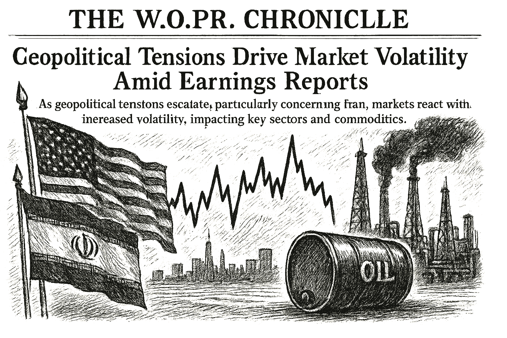

SPY
Current: $738.67Change: -0.26 (-0.04%)
Updated:
Source: yahoo_chartFreshness: fresh


As geopolitical tensions escalate, particularly concerning Iran, markets react with increased volatility, impacting key sectors and commodities.

Today's Headline: Geopolitical Tensions Drive Market Volatility Amid Earnings Reports
Setup: As geopolitical tensions escalate, particularly concerning Iran, markets react with increased volatility, impacting key sectors and commodities.
Primary Topic: Geopolitical Tensions
Specific Development: Iran's threats of retaliation against U.S. strikes have led to rising oil prices and heightened market volatility.
Why Today Is Different: The escalation in tensions has resulted in significant fluctuations in oil prices, which could further influence inflation and economic stability.
Secondary Topics: Oil Prices; Market Volatility; U.S.-Iran Relations
Tone: cautious
Sectors: Energy; Utilities; Industrials
Commodities: Oil
Countries Or Regions: Iran; United States
Macro Themes: Inflation; Geopolitical Risk
Why This Story: The geopolitical landscape is shifting, and its implications for energy prices and inflation could have significant repercussions for market stability.
Why This Matters: Apple (AAPL) Q3 Earnings and Revenues Beat Estimates is the clearest current evidence-led frame for Joshua's observation-only review; missing facts remain explicit intelligence gaps.

- What happened overnight: Oil prices surged as Iran threatened retaliation against U.S. strikes, causing market jitters.
- What changed materially: Increased oil prices and geopolitical instability are affecting market sentiment.
- Market risk: neutral (44).
- Macro regime: defensive_rotation with confidence 0.58.
- Important canonical events: 25 deduplicated event(s) passed materiality and freshness checks.
- Why markets moved: Brent crude prices rose significantly, reflecting concerns over geopolitical tensions.
Why This Matters: The rise in oil prices due to geopolitical tensions can lead to inflationary pressures, impacting consumer sentiment and spending.


- WOPR learning pipeline: Collecting samples
- Candidates evaluated 24h: 0
- Current gate: Evidence
- Notification ledger events in 24h: 3
- Pending orders created/canceled/filled/expired: 0/0/0/0
- Pending lifecycle interpretation: Pending-order cancellations have trackable reasons and no obvious rapid churn pattern.
- Portfolio risk: Label: High / Score: 100.0
- Latest intelligence gap report: intelligence_gap_report_2026-07-26.pdf
Why This Matters: The active gate is Evidence, so the key question is why candidates are stopping before approval, not how to force trades.

- Sentinel role: infrastructure and operational status only.
- State: DEGRADED
- Last successful validation: 2026-07-31T14:09:28.105688+00:00
- Payloads accepted/rejected: 7802/0
- Node health score: 55
Why This Matters: Sentinel is DEGRADED, so Joshua should use its context only to the extent the latest accepted pulse is fresh and authenticated.

Joshua currently favors DELL because it is the highest-ranked available internal opportunity from Portfolio Intelligence.
Candidate confidence: 77.6
Portfolio risk: Label: High / Score: 100.0
Supporting evidence: Prediction evidence: DOWN -1.25% at 65 confidence. / WOPR history (mixed historical/simulation cohort; production eligibility not established): 21847 scored sample(s), 81.8% win rate. / DELL has strong standalone evidence, but it increases portfolio concentration. / Next high-impact macro event: Advance Monthly Sales for Retail and Food Services at 2026-08-14T12:30:00+00:00.
Contradicting evidence: Concentration risk score is 73.6.
Missing evidence: No canonical symbol-specific material event is linked.
Invalidation conditions: Candidate confidence or portfolio-fit evidence deteriorates materially.
Why it matters: DELL is an observation-only review target, not an instruction; Joshua should compare its evidence stack against market context and recent gate failures.
Why This Matters: A top setup earns attention, not automatic allocation; the brief should help Joshua decide what evidence is missing.

- How should Joshua adjust its portfolio in response to rising oil prices?
- What specific geopolitical developments should be monitored closely?
- How do current market conditions affect the outlook for inflation?

The current geopolitical tensions, particularly regarding Iran, are driving oil prices higher, which could lead to inflationary pressures. This situation necessitates a cautious approach to portfolio management, especially in energy and related sectors.

The geopolitical landscape has shifted with Iran's threats, leading to increased oil prices and market volatility.

The urgency of geopolitical developments necessitates a reevaluation of market positions and risk exposure.
No new warnings; however, the geopolitical situation remains fluid and requires close monitoring.
Portfolio Construction Review
Current allocation: 75.0 allocated.
Largest sector: Unclassified at 66.7%.
Largest theme: Unclassified at 66.7%.
Diversification: Concentrated (33.3).
Cash allocation: 92.5% unallocated.
Recommended exposure: DELL at portfolio-fit score 18.4.
Portfolio fit: DELL has strong standalone evidence, but it increases portfolio concentration.
Why This Matters: Portfolio Manager evaluates whether an opportunity improves this portfolio; it does not select the investment, vote, or authorize execution.

Today, the evidence gate matters more than the ticker list; Confidence/Evidence is where Joshua's attention belongs.

| Can trigger trade | no |
| Can modify trade rules | no |
| Can add watch items | yes |
| Can add review questions | yes |
| Can adjust confidence notes | yes |
| Input policy | external_intelligence_plus_sanitized_internal_observations |
| External policy | The Editor-in-Chief synthesizes current world/market context where available and labels unknowns; provider/model provenance remains separate. |
| Internal policy | Joshua/WOPR/Sentinel facts are supplied as sanitized observation-only summaries. |
| Editorial model | gpt-4o-mini |
- Selected by a deterministic daily rotation through symbols already present in the persisted Chronicle snapshot.
- Next earnings: August 6, 2026 (time unknown); status: scheduled.
- Source: finnhub_earnings_calendar.
- Palantir Holds the Edge Ahead of Earnings
- Desk: earnings; source: Yahoo; linked symbols: PLTR.
- Published: 7/30/26 13:03 MST.
- High-impact watch: Advance Monthly Sales for Retail and Food Services - 8/14/26 05:30 MST.
- Affected assets: US equities, Treasuries, USD; source: census_release_schedule.
- LINK earnings: August 6, 2026, time unknown.
- VST earnings: August 7, 2026, time unknown.
- AIRO earnings: August 12, 2026, time unknown.
- Consumer Discretionary: 5.36% session performance; source: persisted sector ledger.
- Consumer Staples: 1.27% session performance; source: persisted sector ledger.
- Financials: 0.81% session performance; source: persisted sector ledger.
- BRENT: 1.98% recorded move; price: 90.11.
- Session: open; catalyst status: possible; source: yahoo_chart.
- Sentinel infrastructure state ONLINE; why it matters: Operational freshness affects how much Joshua can trust external/context observations.
- State: narrow_leadership; score: 53.40/100; advance/decline ratio: 0.53.
- Above 50-day average: 64.70%; sample: 119; provider: sentinel_sampled_breadth.
- Decision outcomes evaluated: 16; currently untestable: 0.
- Warning review: confirmed 1, still watching 1, unconfirmed 1; confidence calibration: insufficient_sample.
- Current macro regime: defensive_rotation; change probability: unavailable.
- Risk dashboard: neutral (47/100); breadth: narrow_leadership; sentiment: neutral.
- Scenario board only - a current-state observation, not a forecast or execution instruction.

- Co-founded Oaktree and shaped modern thinking about risk, market cycles, distressed credit, and second-level analysis.
- Published quotation: "You can't predict. You can prepare."
- Published framework: Invest defensively, insist on a favorable price relative to value, understand where markets stand in their cycles, seek asymmetric outcomes, and resist the emotional extremes of the crowd.
- Committee lens: Marks supplies cycle awareness and defensive calibration: is optimism already in the price, what could cause permanent loss, and is the payoff asymmetric?
- Public philosophy profile only; no participation, endorsement, or current recommendation is implied.
- What specific geopolitical developments should be monitored closely?
- DELL: No canonical symbol-specific material event is linked.
- Attach the missing DELL evidence before the next committee review.
- How should Joshua adjust its portfolio in response to rising oil prices?
- What specific geopolitical developments should be monitored closely?
- How do current market conditions affect the outlook for inflation?
- Evidence agenda: DELL - No canonical symbol-specific material event is linked.
- Proposed review: Pending order lifecycle; why it matters: Pending-order cancellations have trackable reasons and no obvious rapid churn pattern.
- Proposed review: WOPR pipeline Healthy caution; why it matters: The active gate shows whether today's constraint is opportunity count, evidence quality, or calibration.
- Canonical instruments reviewed: 24; delayed 6, fresh 18.
- Leading sources: yahoo_chart (21), treasury_official_yield_curve (3).
- Snapshot recorded: 7/31/26 07:18 MST.
Geopolitical Tensions Drive Market Volatility Amid Earnings Reports
Storm meter: Balanced
Joshua currently favors DELL because it is the highest-ranked available internal opportunity from Portfolio Intelligence.
Candidate confidence: 77.6
Portfolio risk: Label: High / Score: 100.0
Supporting evidence: Prediction evidence: DOWN -1.25% at 65 confidence
Observation mode: observation_only
Watch: Pending order lifecycle; why it matters: Pending-order cancellations have trackable reasons and no obvious rapid churn pattern.
Question: How should Joshua adjust its portfolio in response to rising oil prices?